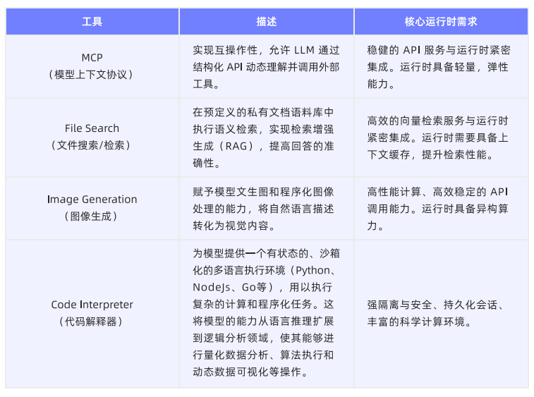
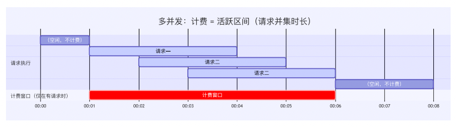
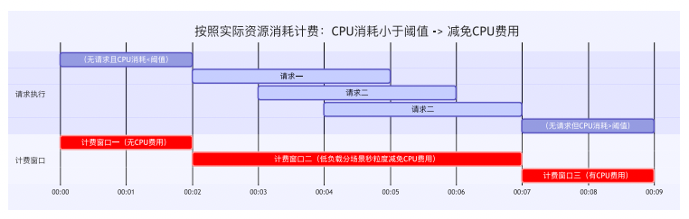

【AI白皮书】AI应用运行时¶

7.1 AI应用运行时的演进趋势¶
7.1.1 从云原生到AI原生¶
云原生时代的核心是应用。将单体应用拆解为更小、更独立、更具弹性的微服务，并高效地在云基础设施上进行部署、扩展和管理。
而Agent的工作流，不再是执行一段固定的main函数，而是一个动态的、长周期的、充满不确定性的“思考-行动”循环。需要极致弹性和成本效益。需要数小时上下文记忆、拥有完整文件系统、并能与浏览器进行复杂交互。
7.1.2 Agentic AI应用的典型场景¶
场景一：交互式智能内容创作助手
对轮对话、上下文记忆、模型自托管、异构任务流、流式响应。
场景二：个性化AI客服
事件驱动、企业数据、实时在线。
场景三：通用Agent平台+病毒式传播的AIGC创意应用
Agent智能体、代码执行验证、部署与分享、脉冲式流量、大文件处理。
7.2 模型运行时¶
7.2.1 企业模型使用的核心痛点¶
资源浪费：业务流量波动大，高峰10万，平日几千，预留峰值会导致算力闲置。
冷启动：低频模型无法保持实例存活，使用时冷启动耗时长。
定制化：业务产品需要定制化，产品迭代周期长。
7.2.2 Serverless模型运行时的核心能力¶
Serverless是什么？
Serverless不是完全没有服务器，而是开发者不需要关心服务器的管理。对于开发者来说，只需关注代码，其他的交给云平台。主流Serverless平台包括阿里云函数计算、腾讯云云函数等。
Serverless和云服务器的区别？
云服务器只是一台远程的服务器；Serverless只上传代码片段（函数），不管服务器，当有请求触发时，代码才会运行。
1、异构算力和1/N卡切分使用
在算力层，Serverless模型运行时通过GPU虚拟化技术将单张GPU显卡划分为N个独立计算单元，每个实例具备隔离的显存空间与算力资源，不同实例通过GPU分时复用技术实现并行推理。
Serverless模型运行时通过池化技术，将CPU/GPU/XPU统一纳管到一个资源池，开发者可根据模型特性按需配置算力模型，比如语音识别等轻量任务分配CPU，图像生成等算力密集型任务分配GPU碎片，大语言模型等显存密集型任务分配GPU整卡或多卡。
2、负载感知调度和毫秒级闲置唤醒
在调度层，Serverless模型运行时通过负载感知调度系统实时监测请求队列深度、GPU显存占有率、实例健康状态等多维指标，基于池化技术构建三级响应机制：请求优先分配至活跃实例；当资源吃紧时，毫秒级唤醒闲置实例了；仅在极端流量下触发冷启动。
其核心技术突破在于利用CRID（用户空间检查点/恢复）技术冻结显存状态，并将显存数据临时置换至内存，并在新的请求调度前实现毫秒级/秒级状态恢复，较传统虚机/容器方案提速百倍。
3、集成加速框架和开发调试工具链
在开发层，Serverless模型运行时预集成加速框架深度优化模型运行效率：vLLM框架的Paged Attention技术通过显存分页管理提升3倍吞吐量；SGLang的RadixAttention实现注意力机制并行编译，降低60%推理延迟；TensorRT-LLM的量化融合策略提升2倍能效比。
开发工具链提供DevPod交互式环境，开发环节实现白屏化操作和实时反馈，集成在线IDE如VSCode/JupyterLab/SSH终端，开发者在云端环境具备比本地环境更高的生产效率；生产部署环节实现革命性简化——上传模型文件后，系统在30秒内自动生成Dockerfile、构建推理服务、输出OpenAPI文档及SDK。
总结，GPU碎片化技术提供原子级算力单元，为智能调度奠定资源基础；负载感知引擎通过毫秒级实例弹性，将碎片化算力转化为即时服务能力；开发工具链则构建自动化流水线，使技术红利直达开发者工作台。
7.2.3 Serverless模型运行时——AI大脑的终极载体¶
Serverless模型运行时实现了异构算力革命、智能调度进化、开发范式升级三重突破，是承载AI大脑的核心基座。
7.3 智能体运行时¶

7.3.4 为AI原生的“会话式”Serverless运行时¶
AI应用的会话既需要状态持久化，又需要高性能的本地计算和会话维度隔离能力。
一个会话，一个独立运行时：
原生会话状态保持
灵活可靠的安全隔离
毫秒级的弹性速度
7.4 工具与云沙箱¶
7.4.1 AI Agent与工具：从概念到能力¶
Agent常用工具类型：


代码解释器、浏览器使用和计算机使用这类复杂工具，已经不是传统的单次、无状态的API调用，而是需要一个有状态的、沙箱化的环境。AI Sandbox，正是一个被严格控制的隔离环境。
7.4.2 复杂工具运行时的核心诉求¶
隔离与安全（Isolation & Security）
状态管理与成本（State Management & Cost）
可扩展性与运维（Scalability & Operations）
7.4.3 Serverless作为AI Sandbox的理想基座¶
1、计算隔离，硬件级与内核级双重保障
比如阿里云函数计算采用的“神龙裸金属+MicroVM安全容器”架构。
2、会话管理，原生支持有状态应用
核心能力是强会话亲和性（Session Affinity）、会话物理隔离（Session Isolation）、会话管理接口（Session Management Interface）。
3、存储隔离，解决状态持久化难题
本地临时存储，利用快照技术实现极速恢复。持久化共享存储，提供会话级别的数据沙箱。
4、对极致存储性能的持续探索
支持在会话粒度上为每一个独立的Sandbox动态挂载专属的高性能存储盘。
7.5 AI应用运行时的降本路线¶
7.5.2 阶段二：多并发+毫秒级计费——面相Web应用的优化¶
突破单并发限制，按函数实例的活跃时间段计费，并将粒度精细化到1ms。从“为单个请求买单”转变为“为活跃区间买单”。

关键技术包括：识别活跃时间段作为计费边界；引入Custom Runtime/Container Runtime；缩短计费粒度；极致优化平台全链路延迟。
7.5.3 阶段三：按实际资源消耗计费——AI时代的价值计费¶
在识别请求边界的基础上，引入按实际资源消耗动态区分活跃/闲置的计费模型。从“为活跃区间买单”演化为“按资源消耗分层计费”。

关键技术包括：支持会话亲和性；按实际资源消耗判断活跃/闲置；执行期间低负载的减免机制；支持不冻结，允许后台任务持续运行。
7.5.4 函数计算的演化方向是把产品形态与用户价值更紧密地对齐¶
在AI时代，函数计算一直坚持走向让开发者只关心业务逻辑，云厂商自动完成一切资源管理与调度的愿景，最终让计算像水、电一样随时可得、按实际使用价值付费。